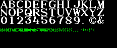
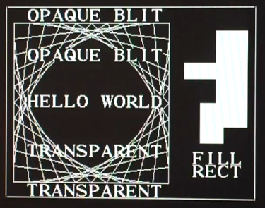

This is a VHDL implementation of a graphics controller. You can configure the bit depth and framebuffer size at synthesize time with generic parameters.
The graphics controller is command based: You can send commands to the SPI interface and after the command is finished, the busy output is set to high again. The bit width of the internal framebuffer memory is the same as the color bit depth, so all coordinates and addresses are pixel addresses. A command is started with setting chip select to low, which is acknowledge from the controller by setting the busy output to high. The bits are sampled by the controller with the rising edges of the SPI clock, most significant bits and bytes first.
Resets the controller. This command can be issued even if the graphics accelerator is busy. It stops the current graphics accleration operation and sets all internal registers to 0.
Sets the address of the framebuffer start for the OutputGenerator. This value buffered and transfered to the OutputGenerator on next VSync.
Sets the offset, which is added each line to the framebuffer address from the OutputGenerator to get the address of the next line. With this operation you can define a window in a wider virtual framebuffer, e.g. for faster scrolling. This value buffered and transfered to the OutputGenerator on next VSync.
Sets the destination address of the framebuffer start for all following painting operations. With this parameter you can implement double buffering: write to an offscreen area while the current framebuffer is displayed and then switch onscreen and offscreen to avoid display inferences.
Code:
dstStart = address;
Sets the line length for all following graphics operations for the destination area.
Code:
dstPitch = offset;
Sets the framebuffer start for source area the Blit command.
Code:
srcStart = address;
Sets the line length for the source area for the Blit command.
Code:
srcPitch = offset;
Sets the color. The bit width is the same as the bit width of the framebuffer.
Code:
currentColor = color;
Sets a pixel to the current color.
Code:
dstStart[x + y * dstPitch] = currentColor;
Sets the start point for the LineTo command.
Code:
lineX0 = x; lineY0 = y;
Draws a line from the current start position to the specified position. Then updates the current start position with the specified position.
Code:
void setPixel(x, y) {
dstStart[x + y * dstPitch] = currentColor;
}
x2 = lineX0;
y2 = lineY0;
int dx, incx, dy, incy, balance;
if (x2 >= x) {
dx = x2 - x;
incx = 1;
} else {
dx = x - x2;
incx = -1;
}
if (y2 >= y) {
dy = y2 - y;
incy = 1;
} else {
dy = y - y2;
incy = -1;
}
if (dx >= dy) {
dy <<= 1;
balance = dy - dx;
dx <<= 1;
while (x != x2) {
setPixel(x, y);
if (balance >= 0) {
y += incy;
balance -= dx;
}
balance += dy;
x += incx;
}
setPixel(x, y);
} else {
dx <<= 1;
balance = dx - dy;
dy <<= 1;
while (y != y2) {
setPixel(x, y);
if (balance >= 0) {
x += incx;
balance -= dy;
}
balance += dx;
y += incy;
}
setPixel(x, y);
}
lineX0 = x2;
lineY0 = y2;
Fills a rectangle. If width or height is 0, no pixel is set.
Code:
for (int y = 0; y < height; y++) {
for (int x = 0; x < width; x++) {
dstStart[(x + x0) + (y + y0) * dstPitch] = currentColor;
}
}
Sets the width and height for all follwing Blit commands. This command is useful for reducing data transfer size, if you want to blit multiple areas of the same size, e.g. for text output with a font with a fixed font width.
Code:
blitWidth = width; blitHeight = height;
Copies the specified source area (with BlitSize) to the destination area.
Code:
for (int y = 0; y < blitHeight; y++) {
for (int x = 0; x < blitWidth; x++) {
dstStart[(x + destinationX) + (y + destinationY) * dstPitch] = srcStart[(x + sourceX) + (y + sourceY) * srcPitch];
}
}
Same as Blit, but the current color is used as transparent color: All pixels of the source area with this color are not copied to the destination area.
Code:
for (int y = 0; y < blitHeight; y++) {
for (int x = 0; x < blitWidth; x++) {
Color c = srcStart[(x + sourceX) + (y + sourceY) * srcPitch];
if (c != currentColor) {
dstStart[(x + destinationX) + (y + destinationY) * dstPitch] = c;
}
}
}
Writes data into the framebuffer, starting at the specified address. The data is a contiguous stream of bits with a bit length which is a multiple of the bit depth of the framebuffer. This command is useful e.g. for downloading fonts or other graphics in offscreen area, or even for slow updates of the framebuffer itself. Some SPI transmitters can transmit only on byte or word boundaries. To avoid overwriting too many pixels, any bits after the specified size are ignored.
Code:
for (int i = 0; i < size; i++) {
address[i] = nextPixelColorFromSpi();
}
SPI Chipselect
SPI Data
SPI Clock
VSync
Busy
Example for 64 colors VGA output:
red[2]
green[2]
blue[2]
HSync
VSync
For maximum flexibility there are multiple modules with well designed interfaces. You can replace individual modules for your application needs. For easier implementation, all modules are clocked by one central clock.
Main entity, with the physical input and output lines. Instantiates and connects the other entities, receives the SPI commands and translates it to the Framebuffer and GraphicsAccelerator entities.
Provides the RAM interfaces: two read ports and one write port. The OutputGenerator uses one read port and the GraphicsAccelerator the other read port. The write port is used by the YaGraphCon main entity for writing to the framebuffer and by the GraphicsAccelerator for writing.
Reads the framebuffer and generates a VGA output signal.
Register based graphics accelerators.
Configured for 1 pixel depth and a 320x240 resolution, the video memory and a font fits in a block RAM of the FPGA on the Spartan 3E Starterkit. This is the 16x16 bitmap font from Ste's Bitmap Fonts page:

I've converted it with a Java program to a C array. The FPGA main entity includes a RS232 receiver for translating the received signals to SPI. The controlling program runs on PC. The final image from the test program looks like this:

YouTube video:
The speed is low, because the PC is bit banging the SPI protocol over an USB serial adapter. The speed of the graphics operations is 50 mega pixels per second on the Spartan 3E Starterkit. Maximum SPI clock can be 25 MHz.
Xilinx ISE 11 project and VHDL sources
PC test program and compiled exe file